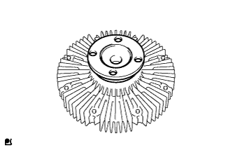

COOLING SYSTEM > ON-VEHICLE INSPECTION |
| 1. INSPECT FOR COOLANT LEAK |
Fill the radiator with coolant and attach a radiator cap tester.
Warm up the engine.
Using the radiator cap tester, increase the pressure inside the radiator to 118 kPa (1.2 kgf/cm2, 17 psi), and check that the pressure does not drop.
If the pressure drops, check the hoses, radiator and water pump for leaks. If no external leaks are found, check the heater core, cylinder block and head.
| 2. CHECK ENGINE COOLANT LEVEL IN RESERVOIR |
Check that the engine coolant level is between the L and F lines when the engine is cold.
If the engine coolant is low, check for leaks and add "TOYOTA Super Long Life Coolant" or similar high quality ethylene glycol based non-silicate, non-amine, non-nitrite and non-borate coolant with long-life hybrid organic acid technology to the F line.
| 3. CHECK ENGINE COOLANT QUALITY |
Remove the radiator cap.
Check if there are any excessive deposits of rust or scales around the radiator cap and radiator filler hole. Also, the coolant should be free of oil.
If excessively dirty, clean the coolant passage and replace the coolant.
Install the radiator cap.
| 4. INSPECT FLUID COUPLING ASSEMBLY |
Check the turning smoothness of the fluid coupling.
If necessary, replace the fluid coupling assembly.
|  |
Check the fluid coupling for damage or silicon oil leaks.
If necessary, replace the fluid coupling assembly.